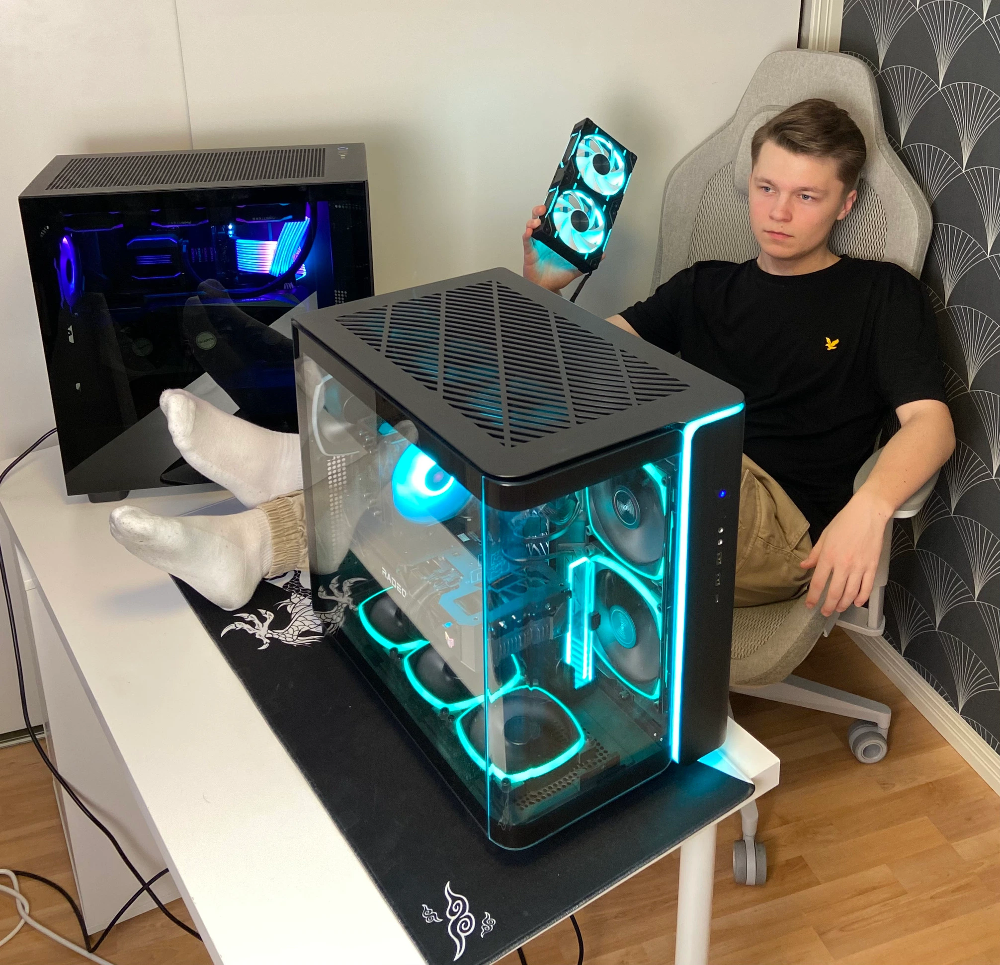
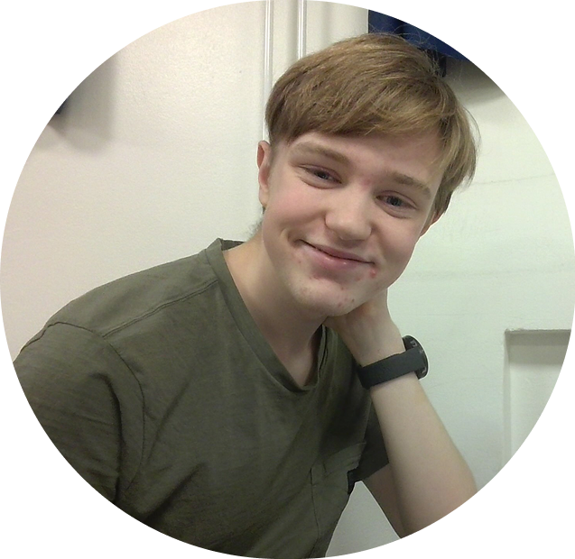

-Theodor (superentreprenör) Wemmel

CEO
Theodor Wemmel
Jag har stor erfarenhet inom att starta och driva skalbara techföretag. Jag har haft mycket problem med schemaläggning och ville förbättra systemet från dess grund. Därför kom jag på idéen runt Auto Skola och har aldrig sett tillbaka sen dess. Dessutom ogillar jag vår konkurent AAdrian.

CTO
Noel Larsson
Jag har en hög kompetens runt att designa flexibla frameworks för skalbara techplatformer. Jag kopplar ihop användare och våra AI motorer för att kunna skapa den perfekta slutprodukten. Istället för att använda AI för att ta genvägar utnyttjar jag dessa verktyg till att skapa en bättre produkt. Genom att integrera dem! Dessutom hatar jag vår konkurent AAdrian.